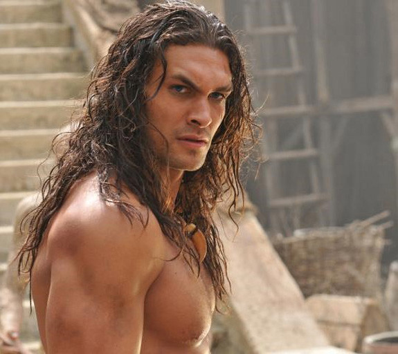

Shabba is mainly a good man but you cannot see it through the first sight. His appearance of random but serious dark guy are part of the first apparence. Most of the people who really went behind this image of dangerous guy and not friendly to anybody understood how great this human being is. As described earlier, Shabba has long hair and long beard like a cavern man. However, he has tattoos all over is body and some scares due to different fights. Shabba has also a trained physic. A bit close from the famous Aquaman or Batman. Not like a bodybuilder but more like slim but really shredded muscle mass.
Shabba has is simply stronger than most of the human being but has quite some issues to control it at the beginning. Think about a wild gorilla unleached in a porcelain store. Wild,aint it ? However, with the help of his own sensei he will understand how to control it through the different episodes of the story.